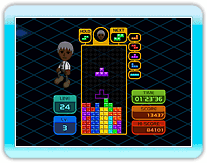
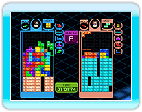
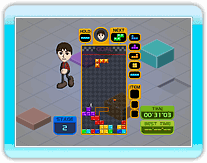
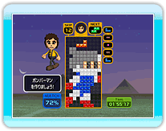
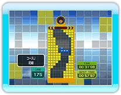

基本的なルールのテトリスです。次々とエントリーされるテトリミノを積んでは消して行きます。テトリミノがエントリーされるフィールドの最上部までブロックで埋まってしまうとゲームオーバー。エンドレス

OFF
の場合は150ラインを完成させた時のスコアとタイム、エンドレス
ON
の場合はゲームオーバー時のスコアで、それぞれハイスコアを目指します。
基本的な対戦ルールのテトリスです。
COM
と対戦してラインを消し合い、先に相手を行動不能
(ゲームオーバー)
にすれば勝ちとなります。ラインを消すと、消したライン数に応じて相手のフィールドにペナルティブロックを送り込めます。
COM
はLv１からLv15まで全部で15体おり、それぞれの
COM
との勝敗数が個人成績として残ります。
「クライマー」と呼ばれるキャラクターを、フィールド上部の「ゴールゾーン」まで導きます。クライマーはブロック１段分の段差を自動で登って行くので、階段状にテトリミノを積み重ねてクライマーを誘導します。途中にある旗のような「チェックポイント」は全て通過しなければなりません。全10ステージをプレイして、その総合タイムでハイスコアを目指します。チェックポイントを通るたびに「ラインキック」が１つ補充されます。
フィールドに描かれている影に沿ってテトリミノを置いて行き、指定された図形を完成させます。クリア条件は「影の部分を全てブロックで埋める」こと。この条件を満たせば、どんなに完成度が低くてもステージクリアとなります。全30ステージで、各ステージのクリアタイムと完成度でハイスコアを目指します。各ステージの制限時間は３分です。
強制スクロールで下降して行くフィールドに沿ってテトリミノを落とし、400ライン下のゴール地点を目指します。途中でテトリミノがペナルティブロック等に引っ掛かり、スクロールアウトしてしまうとゲームオーバー。ゴールに辿り着いた時のタイムでハイスコアを目指します。